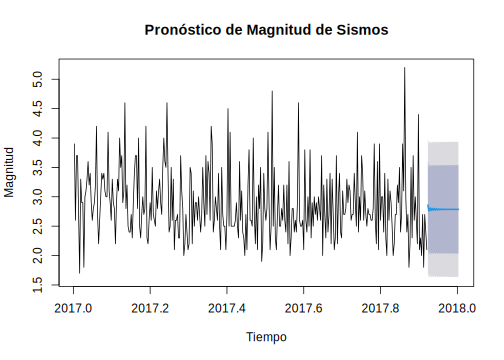
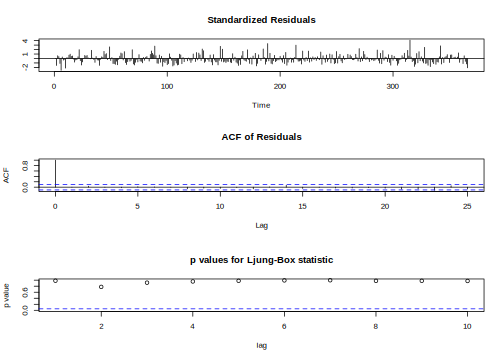
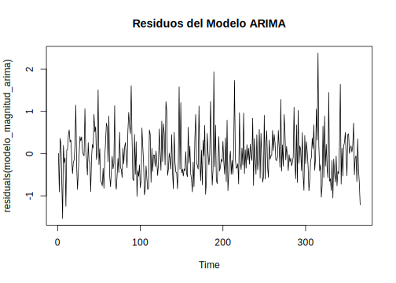
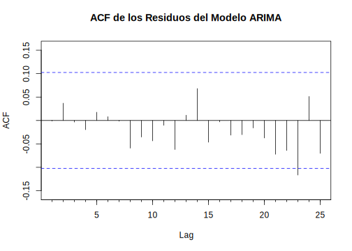
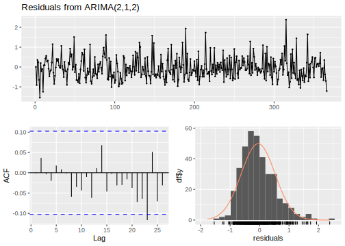

6.1 Magnitud
library(forecast)
indice.ts2 <- head(indice.ts, -30)
# Ajustar el modelo ARIMA
modelo_magnitud_arima <- auto.arima(indice.ts2)
# Resumen del modelo
summary(modelo_magnitud_arima)## Series: indice.ts2
## ARIMA(2,1,2)
##
## Coefficients:
## ar1 ar2 ma1 ma2
## -0.9609 -0.0635 -0.0565 -0.9072
## s.e. 0.1022 0.0567 0.0878 0.0865
##
## sigma^2 = 0.3394: log likelihood = -294.06
## AIC=598.11 AICc=598.3 BIC=617.18
##
## Training set error measures:
## ME RMSE MAE MPE MAPE MASE
## Training set -0.04803261 0.5782438 0.458386 -5.474935 16.43939 NaN
## ACF1
## Training set -0.0008658055El modelo ARIMA(2,1,2) ajustado a la serie temporal indice.ts2 de (magnitud de los sismos) presenta los siguientes coeficientes estimados: AR1 (-0.9609), AR2 (-0.0635), MA1 (-0.0565) y MA2 (-0.9072), todos con errores estándar que sugieren una precisión razonable en las estimaciones. Las medidas de error en el conjunto de entrenamiento incluyen un ME de -0.048, un RMSE de 0.578, y un MAE de 0.458, indicando un ajuste razonable del modelo con errores moderadamente bajos. El MAPE de 16.44% sugiere que el modelo tiene una precisión aceptable en términos relativos, aunque no excelente.
# Hacer predicciones para los próximos 4 meses utilizando la función forecast del paquete forecast
pronostico_magnitud_arima <- forecast::forecast(modelo_magnitud_arima, h=30)
# Graficar las predicciones
plot(pronostico_magnitud_arima, main="Pronóstico de Magnitud de Sismos", ylab="Magnitud", xlab="Tiempo") Se presenta la serie temporal de la magnitud de los sismos desde principios de 2017 hasta principios de 2018, junto con el pronóstico de magnitud para los últimos 30 días del período analizado. La línea azul representa las predicciones del modelo Prophet, mientras que las áreas sombreadas en gris claro y oscuro representan los intervalos de confianza al 80% y 95%, respectivamente, las bandas de confianza más amplias hacia el final del período indican una mayor incertidumbre en las predicciones futuras.
library(forecast)
library(tseries)
# Ajustar el modelo ARIMA automáticamente
modelo_magnitud_arima <- auto.arima(sismo_4_max_completo_filtrado$MAX_MAGNITUD_ML)
# Mostrar el resumen del modelo
summary(modelo_magnitud_arima)## Series: sismo_4_max_completo_filtrado$MAX_MAGNITUD_ML
## ARIMA(2,1,2)
##
## Coefficients:
## ar1 ar2 ma1 ma2
## -0.9673 -0.0619 -0.0484 -0.9152
## s.e. 0.0989 0.0546 0.0848 0.0836
##
## sigma^2 = 0.3366: log likelihood = -318.87
## AIC=647.75 AICc=647.92 BIC=667.25
##
## Training set error measures:
## ME RMSE MAE MPE MAPE MASE
## Training set -0.04863675 0.5761563 0.4552714 -5.54113 16.4699 0.7116663
## ACF1
## Training set -0.001168494El modelo ARIMA de magnitud muestra un ajuste razonable, aunque con ciertas limitaciones en la predicción debido a la variabilidad de los datos sísmicos.


# ACF de los residuos
Acf(residuals(modelo_magnitud_arima), main="ACF de los Residuos del Modelo ARIMA") Las dos gráficas indican que el modelo ARIMA está bien especificado, ya que los residuos no presentan autocorrelación significativa y están distribuidos de manera aleatoria alrededor de cero. Sin embargo, la presencia de algunos picos sugiere que podría haber eventos atípicos o anomalías pero dado que en los sismos es normal, no se consideran datos atípicos.

##
## Ljung-Box test
##
## data: Residuals from ARIMA(2,1,2)
## Q* = 3.2928, df = 6, p-value = 0.7713
##
## Model df: 4. Total lags used: 10La gráfica compuesta presenta un análisis de los residuos del modelo ARIMA(2,1,2) ajustado para predecir la magnitud de los sismos. La serie temporal de los residuos (parte superior) muestra que los residuos están distribuidos alrededor de cero sin patrones evidentes, aunque con algunos picos ocasionales. La función de autocorrelación (ACF) de los residuos (parte inferior izquierda) revela que casi todos los valores de autocorrelación caen dentro de las bandas de confianza, indicando que no hay autocorrelación significativa en los residuos. Esto sugiere que el modelo ha capturado bien las dependencias temporales en los datos. En conjunto, estos análisis indican que el modelo ARIMA(2,1,2) es adecuado, ya que los residuos no presentan autocorrelación significativa y siguen una distribución aproximadamente normal, aunque hay algunos picos que podrían ser eventos atípicos.
# Calcular pronósticos dentro de la muestra
fitted_values <- fitted(modelo_magnitud_arima)
actual_values <- sismo_4_max_completo_filtrado$MAX_MAGNITUD_ML
# Calcular errores
errors <- actual_values - fitted_values
# Calcular métricas de error
rmse <- sqrt(mean(errors^2))
mae <- mean(abs(errors))
mape <- mean(abs(errors / actual_values)) * 100
# Mostrar las métricas de error
cat("RMSE:", rmse, "\n")## RMSE: 0.5761563## MAE: 0.4552714## MAPE: 16.4699 %En conjunto, estas métricas sugieren que el modelo ARIMA(2,1,2) tiene un rendimiento razonablemente bueno para predecir la magnitud de los sismos.
# Prueba de Ljung-Box para autocorrelaciones en los residuos
Box.test(residuals(modelo_magnitud_arima), lag=10, type="Ljung-Box")##
## Box-Ljung test
##
## data: residuals(modelo_magnitud_arima)
## X-squared = 3.2928, df = 10, p-value = 0.9737Los residuos se consideran independientes, lo que sugiere que el modelo ARIMA ha capturado adecuadamente las dependencias temporales en los datos.
# Residuos del modelo
residuales_magnitud_arima <- residuals(modelo_magnitud_arima)
# Prueba de Shapiro-Wilk para normalidad
shapiro.test(residuales_magnitud_arima)##
## Shapiro-Wilk normality test
##
## data: residuales_magnitud_arima
## W = 0.96371, p-value = 6.991e-08##
## Box-Ljung test
##
## data: residuales_magnitud_arima
## X-squared = 0.00050384, df = 1, p-value = 0.9821Los resultados de los dos tests muestran que los residuos son independientes, lo que indica que el modelo ha capturado adecuadamente las dependencias temporales en los datos.